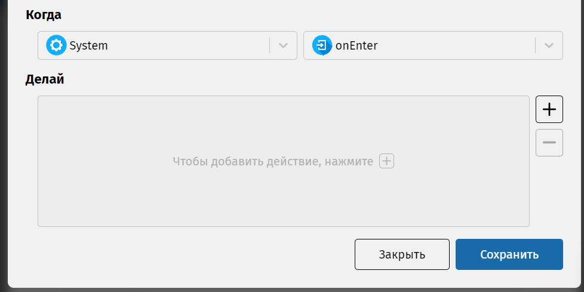

Для того, чтобы зажечь компонент нужно указать соответствующее действие в событии входа для состояния «Включен». Нажмите дважды левой кнопкой мышки на пустой области этого состояния. Появится диалоговое окно для его редактирования. Нажмите знак плюса для добавления нового события.
Вам откроется следующее окно. Вверху в левом выпадающем списке выберите компонент, по умолчанию стоит «System» (он содержит системные события, не относящиеся к компонентам), а в правом выпадающем списке – событие «onEnter» (так в IDE называется событие «entry/»).
Теперь нажмите кнопку с плюсом справа от области «Делай». В левом списке нужно выбрать компонент, а в правом – действие для включения светодиода. Для каждого пункта списка доступна всплывающая подсказка, объясняющая, за что отвечает выбранное действие.